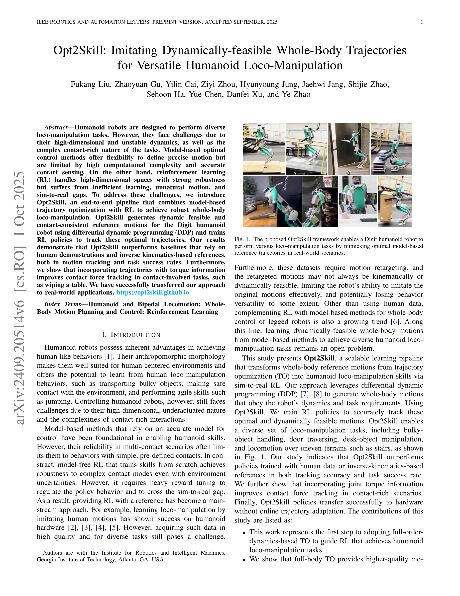
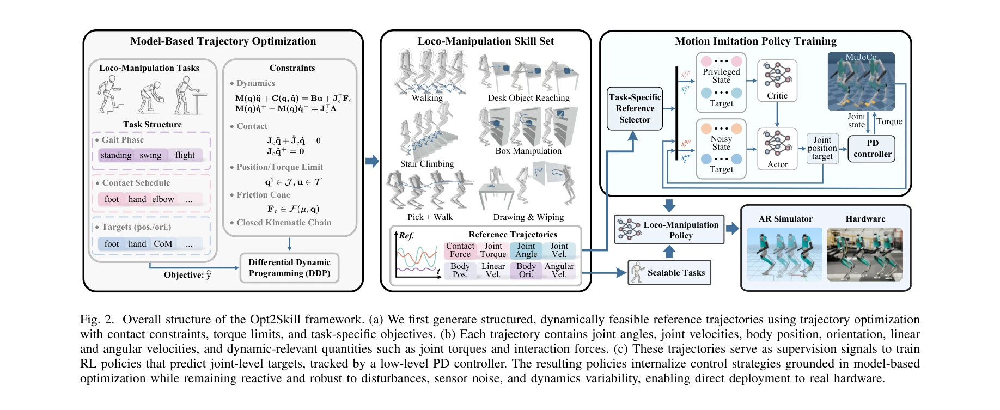

저자: Fukang Liu, Zhaoyuan Gu, Yilin Cai, Ziyi Zhou, Hyunyoung Jung, Jaehwi Jang, Shijie Zhao, Sehoon Ha, Yue Chen, Danfei Xu, Ye Zhao | 날짜: 2024-09-30 | URL: https://arxiv.org/abs/2409.20514

Fig. 1. The proposed Opt2Skill framework enables a Digit humanoid robot to
Opt2Skill은 Differential Dynamic Programming (DDP)로 생성한 동역학적으로 실현 가능한 궤적을 Reinforcement Learning (RL)으로 모방하게 함으로써 인간형 로봇의 다양한 로코-조작 작업을 효과적으로 수행하는 통합 파이프라인이다.
Fig. 1. The proposed Opt2Skill framework enables a Digit humanoid robot to

Fig. 2. Overall structure of the Opt2Skill framework. (a) We first generate structured, dynamically feasible reference t
총평: Opt2Skill은 model-based trajectory optimization과 reinforcement learning을 효과적으로 결합하여 인간형 로봇의 동역학적으로 실현 가능한 다양한 로코-조작 작업을 체계적으로 해결하며, 실제 하드웨어 전이까지 성공한 중요한 기여로, 토크 정보 활용과 광범위한 실험 검증을 통해 높은 과학적 가치를 갖춘다.